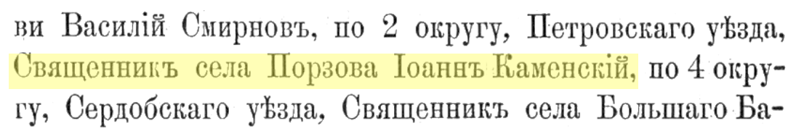
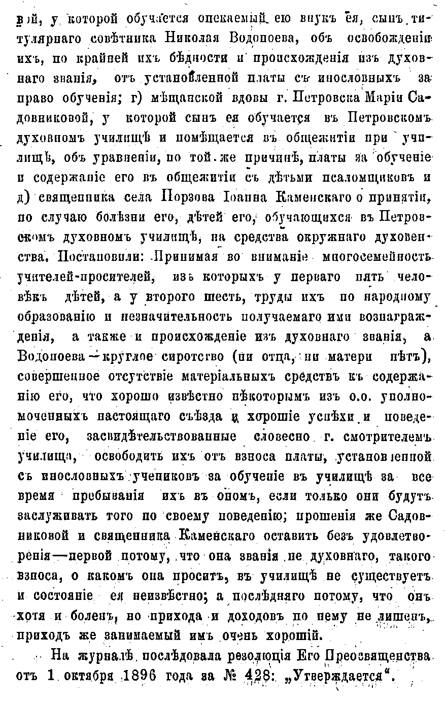

Глава II
Каменские: от диакона Павла к моему прадеду Евгению
Документально подтверждённая линия Каменских начинается для меня с моего прапрапрапрадеда Павла Григорьевича Каменского. Он родился в 1785 году. В документах он проходит как диакон. Дата смерти обозначается осторожно: не ранее 1840 года. Такая формулировка сама по себе говорит языком архива: человек ещё присутствует в документах определённого времени, но точная дата его ухода пока не найдена. Павел Григорьевич служил в пространстве Пензенской и Саратовской епархии. В его биографической карточке появляются сёла Каменка, Самодуровка, Дёмкино, Покровская церковь, Казанский молитвенный дом. Это не громкие столицы и не большие исторические сцены. Это приходская Россия: малые населённые места, деревянные и каменные церкви, духовные училища, семьи священно- и церковнослужителей, дети, которые с ранних лет входили в тот же круг. В этом мире фамилия была не просто фамилией. Она была частью служебной, образовательной и семейной сети. Сыновья духовенства поступали в училища. Дочери выходили замуж внутри того же круга. Приходы, браки, назначения, рукоположения и переводы создавали особую карту жизни.
Сын Павла Григорьевича, Василий Павлович Каменский, продолжил эту линию уже как священник. Он родился в 1804 году и умер не позднее 1862 года. В его карточке рядом с именем стоит сан — священник. Он служил в Саратовской губернии, в Хвалынском уезде: сначала в селе Ново-Спасском, затем в селе Стригай. Его жена, Мария Матвеевна, входит в следующую важную точку нашей родословной: именно от Василия Павловича и Марии Матвеевны родился Иван Васильевич Каменский — мой прапрадед.
Так от Павла Григорьевича начинается уже не семейная версия и не красивая гипотеза, а документальный ствол Каменских: Павел Григорьевич, Василий Павлович, Иван Васильевич, Евгений Иванович, Сергей Евгеньевич, Владимир Сергеевич — и дальше мы.
1 мая 1871 года, согласно официальному определению Епархиального начальства («Саратовские епархиальные ведомости», № 9), священник села Порзова Иоанн (Иван) Васильевич Каменский был утверждён в должности благочинного 2-го округа Петровского уезда. Это назначение в 28-летнем возрасте подтверждает его высокий статус и авторитет в епархии и обозначает Порзово как ключевую географическую точку в истории династии.



Фрагмент епархиальных ведомостей с упоминанием священника села Порзова Иоанна Каменского.
Следующая важная точка моей прямой отцовской линии — Иван Васильевич Каменский, мой прапрадед. Именно через него документальный ствол Каменских приближается к человеку, с фотографии которого началась эта книга, — к моему прадеду Евгению Ивановичу Каменскому.
Документ 1896 года показывает последние годы служения моего прапрадеда Ивана Васильевича в Порзово. В нём упоминается прошение священника села Порзова Ивана Каменского о принятии его детей, обучавшихся в Петровском духовном училище, на средства окружного духовенства — по причине болезни отца. Прошение оставили без удовлетворения: в постановлении сказано, что, хотя он и болен, прихода и доходов по нему не лишён, а занимаемый им приход «очень хороший».
Для меня эта запись важна тем, что за сухим архивным языком виден живой человек: мой прапрадед, его болезнь, дети в духовном училище и Порзовский приход, где он продолжал служить незадолго до смерти.

Упоминание Иоанна(Ивана) Каменского, священника села Порзова, 1896 год. Прошение о помощи в содержании детей, обучавшихся в Петровском духовном училище, по причине болезни отца.
Иван Васильевич родился в 1843 году и умер в сентябре 1898 года. Он окончил Саратовскую духовную семинарию и в декабре 1866 года был рукоположен во священника. Его служение связано с селом Порзово Петровского уезда и Казанской церковью. Там он был не только приходским священником, но и благочинным второго округа Петровского уезда.
Именно в Порзово, в семье моего прапрадеда Ивана Васильевича и моей прапрабабушки Веры Дмитриевны Добролюбовой-Каменской, родился мой прадед Евгений Иванович Каменский. Так складывается первая большая линия книги:
Павел — диакон. Василий — священник. Иван — священник. Евгений — священник.
Четыре поколения, в которых служение не выглядит случайностью. Оно становится родовой осью.
Но эта история была бы неполной, если бы мы видели только мужскую линию. Вокруг неё — жёны, дочери, тесть, зятья, училища, браки, другие духовные семьи. Через Веру Дмитриевну Добролюбову в род входит линия Добролюбовых. Через Анну Константиновну Фисейскую позже войдёт ещё одна мощная духовная река — Фисейские. У Евгения Ивановича и Анны Константиновны были дети: Сергей, Владимир и Антонина. Через Сергея Евгеньевича идёт моя прямая линия, но судьба Владимира Евгеньевича тоже оказалась важной для понимания семейного страха XX века.
История рода никогда не идёт одной прямой линией.
Она похожа на реку, в которую впадают другие реки.
И каждая меняет её течение.